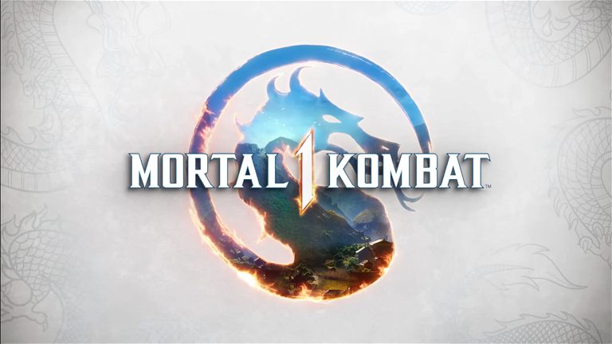

Mortal Kombat 1

Mortal Kombat 1 (comúnmente abreviado como MK1) es un videojuego de lucha desarrollado por NetherRealm Studios y publicado por Warner Bros. Games. Es la duodécima entrega principal de la serie Mortal Kombat y una secuela de Mortal Kombat 11 (2019).
Mortal Kombat 1 es el segundo reinicio suave de la serie, tras Mortal Kombat (2011). El videojuego salió a la venta para PlayStation 5, Xbox Series X/S, Nintendo Switch y Microsoft Windows, el 19 de septiembre de 2023.